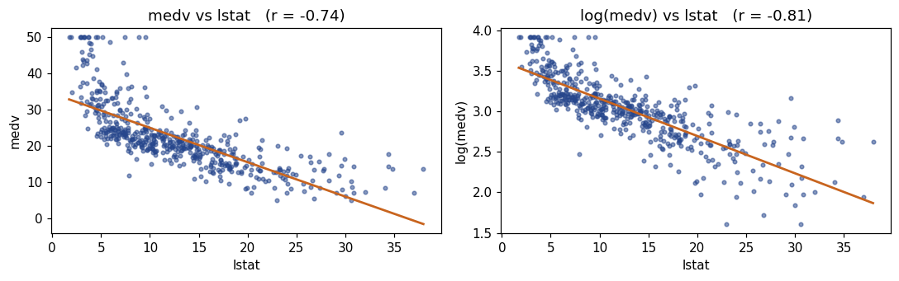
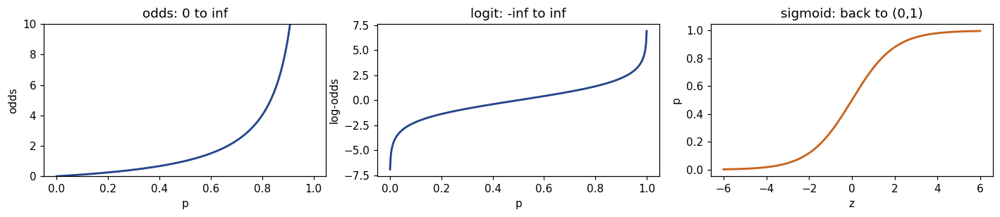
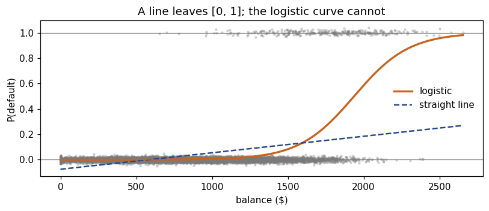
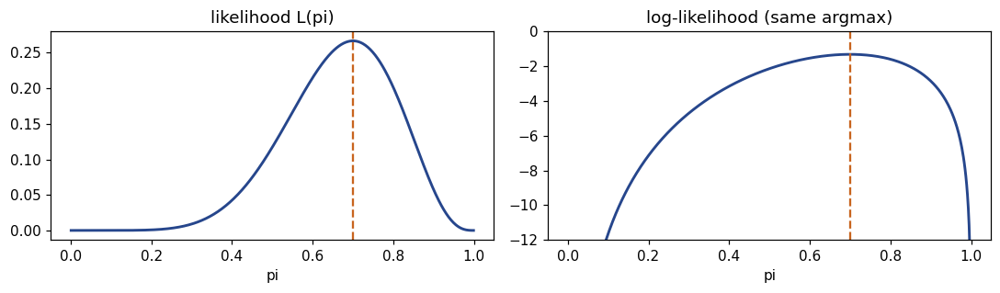
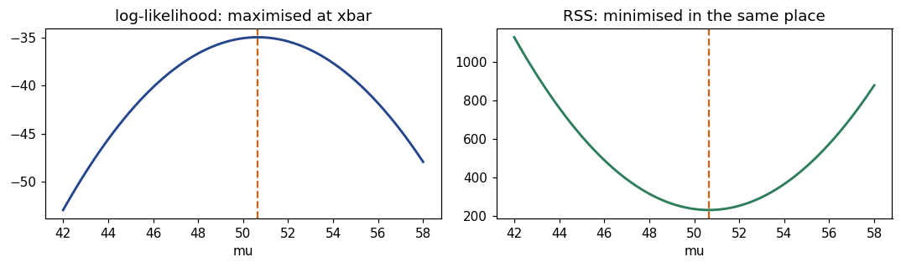
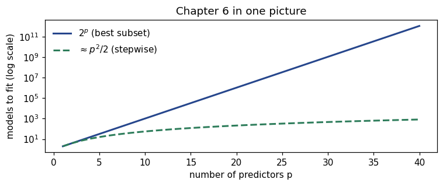

This notebook runs on Colab as-is. The badge link above and the GITHUB_RAW line in the setup cell already point to this repository, so everything installs and loads automatically.
Chapter 0b — Precourse Toolkit¶
Lab: notation, logs and odds, likelihood, and the Python the labs use¶
Course: Quantitative Research Methods Instructor: Prof. Dr. Christoph Weisser Source: James, Witten, Hastie, Tibshirani & Taylor (2023), An Introduction to Statistical Learning, with Applications in Python, Springer. Companion code at statlearning.com.
Goal. The second half of the precourse, in code. Part (a) refreshed the statistics; this notebook covers the machinery the later chapters use without explanation:
reading mathematical notation — sums, products,
argmin, indicators, sets;logs and exponentials, and what a logged coefficient means;
probability → odds → log-odds → back, and why classification lives on the logit scale;
likelihood and maximum likelihood, by hand and numerically;
counting: why \(2^p\) ends best-subset selection;
the Python patterns every lab uses — functions, loops, seeds,
fit/predict, and the split discipline.
Companion slides: Chapters/chapter_00b/chapter_00b.pdf.
Setup¶
Run this cell once. The ISLP package can be installed with pip install ISLP; the same data are also in the workspace’s ALL CSV FILES - 2nd Edition folder.
# --- Setup: runs locally AND on Google Colab --------------------------------
# Silence only the spurious 'encountered in matmul' RuntimeWarnings that the macOS
# Accelerate BLAS emits; real warnings (deprecations, model caveats) stay visible.
import warnings
warnings.filterwarnings('ignore', message='.*encountered in matmul', category=RuntimeWarning)
import importlib.util, os, subprocess, sys
IN_COLAB = 'google.colab' in sys.modules
def _ensure(pkg, import_name=None):
"""pip-install pkg (quietly) if its import is missing."""
if importlib.util.find_spec(import_name or pkg) is None:
subprocess.run([sys.executable, '-m', 'pip', 'install', '-q', pkg], check=False)
if IN_COLAB: # Colab ships numpy/pandas/sklearn/statsmodels; add course extras
for _pkg, _imp in [('ISLP', 'ISLP')]:
_ensure(_pkg, _imp)
import numpy as np
import pandas as pd
import matplotlib.pyplot as plt
rng = np.random.default_rng(2024)
plt.rcParams['figure.dpi'] = 110
try:
from ISLP import load_data
HAVE_ISLP = True
except ImportError:
HAVE_ISLP = False
print('ISLP not installed; using CSV / URL fallbacks.')
# Local CSV location (repo layout first, then legacy paths, then a data/ cache).
_CANDIDATES = ['../ALL CSV FILES - 2nd Edition',
'ALL CSV FILES - 2nd Edition',
'../../ALL CSV FILES - 2nd Edition', 'data']
CSV = next((p for p in _CANDIDATES if os.path.isdir(p)), 'data')
# GITHUB_RAW lets a fresh Colab runtime fetch any
# CSV that is neither in ISLP nor already local (spaces in the folder -> %20).
GITHUB_RAW = ('https://raw.githubusercontent.com/ChrisW09/Quantitative-Research-Methods/main/'
'ALL%20CSV%20FILES%20-%202nd%20Edition')
# The four datasets NOT in the ISLP package -> load from the book's official
# site so the notebook works on a fresh Colab even before the repo is published.
KNOWN_URLS = {
'Advertising': 'https://www.statlearning.com/s/Advertising.csv',
'Heart': 'https://www.statlearning.com/s/Heart.csv',
'Income1': 'https://www.statlearning.com/s/Income1.csv',
'Income2': 'https://www.statlearning.com/s/Income2.csv',
}
def load(name, **read_csv_kwargs):
"""Load a course dataset. Order: ISLP package -> R datasets -> local CSV
-> official book URL -> your GitHub repo. Works locally and on Colab."""
if HAVE_ISLP:
try:
return load_data(name)
except Exception:
pass
if name == 'USArrests': # classic R dataset, not in ISLP
try:
import statsmodels.api as sm
return sm.datasets.get_rdataset('USArrests', 'datasets').data
except Exception:
pass
path = f'{CSV}/{name}.csv'
if os.path.exists(path): # running from the repo (local)
return pd.read_csv(path, **read_csv_kwargs)
remotes = ([KNOWN_URLS[name]] if name in KNOWN_URLS else []) + [f'{GITHUB_RAW}/{name}.csv']
for url in remotes: # fresh Colab: stream over https
try:
return pd.read_csv(url, **read_csv_kwargs)
except Exception:
continue
raise FileNotFoundError(
f"Could not load {name!r}. Put the CSV in '{CSV}/' or check your connection for the GITHUB_RAW fallback.")
from scipy import stats, optimize
import statsmodels.api as sm
import statsmodels.formula.api as smf
ACCENT, ORANGE, GREY, GREEN = '#26468C', '#C8641E', '#7A7A7A', '#2E7D5B'
print('ready')
ready
1. Reading mathematical notation¶
Every symbol below is an instruction. Translating it into one line of numpy is the fastest way to make it stop being intimidating.
y = np.array([3.0, 1.0, 4.0])
y_hat = np.array([2.0, 2.0, 4.0])
# sum_i (y_i - yhat_i)^2 -- "for each observation, square the gap, add them up"
print('RSS ', ((y - y_hat) ** 2).sum()) # 2.0
# prod_i y_i
print('product ', y.prod()) # 12.0
# (1/n) sum_i I(y_i != yhat_i) -- the indicator is just a boolean, averaged
print('error rate ', (y != y_hat).mean().round(3)) # 0.667
# S = {i : y_i > 2}; |S| and the mean over S
S = y > 2
print('|S| and mean ', S.sum(), y[S].mean()) # 2, 3.5
RSS 2.0
product 12.0
error rate 0.667
|S| and mean 2 3.5
Booleans are indicators. y != y_hat is a vector of True/False; averaging it gives the proportion of True — exactly \(\frac{1}{n}\sum_i I(y_i \ne \hat y_i)\). That single fact makes most classification formulas one-liners.
# min vs argmin: a value versus the input that achieves it
theta = np.linspace(0, 8, 801)
f = (theta - 3) ** 2 + 5
print(f'min f = {f.min():.2f} <- the VALUE')
print(f'argmin f = {theta[f.argmin()]:.2f} <- the PARAMETER')
# np.argmin returns a POSITION, not the value at it -- the classic lab bug
scores = [4.9, 4.4, 4.4, 4.5, 4.9]
print(f'\nargmin position {np.argmin(scores)} -> degree {np.argmin(scores) + 1}')
min f = 5.00 <- the VALUE
argmin f = 3.00 <- the PARAMETER
argmin position 1 -> degree 2
2. Logs and exponentials¶
np.log is the natural log (base \(e\)), the inverse of np.exp. The three rules that matter: \(\log(ab)=\log a+\log b\), \(\log(a/b)=\log a-\log b\), \(\log(a^k)=k\log a\).
a, b = 2.0, 4.0
print(np.log(a * b), '=', np.log(a) + np.log(b)) # multiplication -> addition
print(np.log(a ** 5), '=', 5 * np.log(a)) # powers -> multiplication
print(np.exp(np.log(7.0)), np.log(np.exp(7.0))) # they undo each other
# Solve e^{0.4 t} = 5 -> t = log(5)/0.4
print('\nt =', round(np.log(5) / 0.4, 3))
2.0794415416798357 = 2.0794415416798357
3.4657359027997265 = 3.4657359027997265
6.999999999999999 7.0
t = 4.024
# Why we work with log-likelihoods: products of probabilities underflow.
for n in (1000, 2000):
p = np.full(n, 0.5)
print(f'n = {n:5d}: product = {p.prod():.3e} sum of logs = {np.log(p).sum():.2f}')
# n=1000 still fits in a float (1e-301); by n=2000 the product IS zero, and
# every model then looks equally good. The log is an ordinary number throughout.
n = 1000: product = 9.333e-302 sum of logs = -693.15
n = 2000: product = 0.000e+00 sum of logs = -1386.29
A log scale can straighten a relationship¶
Boston = load('Boston')
x, yv = Boston['lstat'], Boston['medv']
fig, axes = plt.subplots(1, 2, figsize=(10, 3.2))
for ax, target, lab in [(axes[0], yv, 'medv'), (axes[1], np.log(yv), 'log(medv)')]:
ax.scatter(x, target, s=9, color=ACCENT, alpha=.55)
b1, b0 = np.polyfit(x, target, 1)
xs = np.linspace(x.min(), x.max(), 50)
ax.plot(xs, b0 + b1 * xs, color=ORANGE, lw=1.8)
ax.set_title(f'{lab} vs lstat (r = {np.corrcoef(x, target)[0,1]:.2f})')
ax.set_xlabel('lstat'); ax.set_ylabel(lab)
plt.tight_layout(); plt.show()

# Interpreting a coefficient on a logged response: multiply by e^beta.
fit_log = smf.ols('np.log(medv) ~ lstat', data=Boston).fit()
b = fit_log.params['lstat']
print(f'coefficient on lstat : {b:.4f}')
print(f'multiplicative effect e^b : {np.exp(b):.4f}')
print(f'i.e. a 1-point rise in lstat is associated with {100*(np.exp(b)-1):+.2f}% in medv')
print(f'the naive "100*b%" shortcut : {100*b:+.2f}% (close, because b is small)')
coefficient on lstat : -0.0461
multiplicative effect e^b : 0.9550
i.e. a 1-point rise in lstat is associated with -4.50% in medv
the naive "100*b%" shortcut : -4.61% (close, because b is small)
3. Probability, odds and the logit¶
\(\text{odds} = p/(1-p)\), \(\text{logit}(p) = \log \text{odds}\), and the way back is the logistic (sigmoid) function \(\sigma(z) = 1/(1+e^{-z})\).
def odds(p): return p / (1 - p)
def logit(p): return np.log(odds(p))
def sigmoid(z): return 1 / (1 + np.exp(-np.clip(z, -35, 35))) # clipped = safe
tab = pd.DataFrame({'p': [0.10, 0.25, 0.50, 0.75, 0.90]})
tab['odds'] = odds(tab.p).round(3)
tab['log-odds'] = logit(tab.p).round(3)
tab['back to p'] = sigmoid(logit(tab.p)).round(3)
tab
| p | odds | log-odds | back to p | |
|---|---|---|---|---|
| 0 | 0.10 | 0.111 | -2.197 | 0.10 |
| 1 | 0.25 | 0.333 | -1.099 | 0.25 |
| 2 | 0.50 | 1.000 | 0.000 | 0.50 |
| 3 | 0.75 | 3.000 | 1.099 | 0.75 |
| 4 | 0.90 | 9.000 | 2.197 | 0.90 |
p = np.linspace(.001, .999, 400); z = np.linspace(-6, 6, 400)
fig, axes = plt.subplots(1, 3, figsize=(13, 2.9))
axes[0].plot(p, odds(p), color=ACCENT, lw=1.9); axes[0].set_ylim(0, 10)
axes[0].set_xlabel('p'); axes[0].set_ylabel('odds'); axes[0].set_title('odds: 0 to inf')
axes[1].plot(p, logit(p), color=ACCENT, lw=1.9)
axes[1].set_xlabel('p'); axes[1].set_ylabel('log-odds'); axes[1].set_title('logit: -inf to inf')
axes[2].plot(z, sigmoid(z), color=ORANGE, lw=1.9)
axes[2].set_xlabel('z'); axes[2].set_ylabel('p'); axes[2].set_title('sigmoid: back to (0,1)')
plt.tight_layout(); plt.show()

Why a straight line cannot model a probability¶
Default = load('Default')
xb = Default['balance'].to_numpy()
yb = (Default['default'] == 'Yes').astype(float).to_numpy()
print(f'n = {len(yb)}, default rate = {yb.mean():.4f}')
logit_fit = sm.Logit(yb, sm.add_constant(xb)).fit(disp=0)
lin_b1, lin_b0 = np.polyfit(xb, yb, 1)
grid = np.linspace(xb.min(), xb.max(), 300)
fig, ax = plt.subplots(figsize=(7.5, 3.3))
ax.scatter(xb, yb + rng.normal(0, .012, len(yb)), s=4, color=GREY, alpha=.25)
ax.plot(grid, sigmoid(logit_fit.params[0] + logit_fit.params[1] * grid),
color=ORANGE, lw=2.2, label='logistic')
ax.plot(grid, lin_b0 + lin_b1 * grid, color=ACCENT, lw=1.6, ls='--', label='straight line')
ax.axhline(0, color=GREY, lw=.8); ax.axhline(1, color=GREY, lw=.8)
ax.set_xlabel('balance ($)'); ax.set_ylabel('P(default)'); ax.legend(frameon=False)
ax.set_title('A line leaves [0, 1]; the logistic curve cannot')
plt.tight_layout(); plt.show()
print(f'\nfitted log-odds = {logit_fit.params[0]:.3f} + {logit_fit.params[1]:.5f} * balance')
print(f'odds ratio per $100 of balance: {np.exp(100*logit_fit.params[1]):.3f}')
n = 10000, default rate = 0.0333
fitted log-odds = -10.651 + 0.00550 * balance
odds ratio per $100 of balance: 1.733

The published ISLP fit is \(-10.65 + 0.0055\times\text{balance}\) — reproduced exactly above. A coefficient of \(0.0055\) on the log-odds scale means each extra $100 of balance multiplies the odds of default by \(e^{100(0.0055)} = 1.73\).
4. Likelihood and maximum likelihood¶
The likelihood is the probability of the data you did observe, read as a function of the parameter. Maximum likelihood picks the parameter that makes the observed data most probable.
# A coin: 7 heads in 10 tosses.
n, k = 10, 7
pi = np.linspace(.001, .999, 500)
L = stats.binom.pmf(k, n, pi)
ll = np.log(L)
fig, axes = plt.subplots(1, 2, figsize=(10, 3))
axes[0].plot(pi, L, color=ACCENT, lw=1.9); axes[0].axvline(k/n, color=ORANGE, ls='--')
axes[0].set_title('likelihood L(pi)'); axes[0].set_xlabel('pi')
axes[1].plot(pi, ll, color=ACCENT, lw=1.9); axes[1].axvline(k/n, color=ORANGE, ls='--')
axes[1].set_ylim(-12, 0); axes[1].set_title('log-likelihood (same argmax)'); axes[1].set_xlabel('pi')
plt.tight_layout(); plt.show()
print('argmax of L :', round(pi[L.argmax()], 3))
print('argmax of ll :', round(pi[ll.argmax()], 3), ' <- identical, as log is increasing')
print('closed form : k/n =', k/n)

argmax of L : 0.699
argmax of ll : 0.699 <- identical, as log is increasing
closed form : k/n = 0.7
# The Bernoulli MLE on real data (Extended Exercise 0b.1)
k_def, n_def = int(yb.sum()), len(yb)
print(f'{k_def} defaults out of {n_def} -> pi_hat = k/n = {k_def/n_def:.4f}')
# ...and the same answer found numerically, by maximising the log-likelihood
def neg_loglik(pi):
return -(k_def * np.log(pi) + (n_def - k_def) * np.log(1 - pi))
opt = optimize.minimize_scalar(neg_loglik, bounds=(1e-6, 1-1e-6), method='bounded')
print(f'numerical maximiser = {opt.x:.4f}')
333 defaults out of 10000 -> pi_hat = k/n = 0.0333
numerical maximiser = 0.0333
Least squares is maximum likelihood under normal errors¶
data = rng.normal(50, 5, 12)
mus = np.linspace(42, 58, 400)
loglik = np.array([stats.norm.logpdf(data, m, 5).sum() for m in mus])
rss = np.array([((data - m) ** 2).sum() for m in mus])
fig, axes = plt.subplots(1, 2, figsize=(10, 3))
axes[0].plot(mus, loglik, color=ACCENT, lw=1.9); axes[0].axvline(data.mean(), color=ORANGE, ls='--')
axes[0].set_title('log-likelihood: maximised at xbar'); axes[0].set_xlabel('mu')
axes[1].plot(mus, rss, color=GREEN, lw=1.9); axes[1].axvline(data.mean(), color=ORANGE, ls='--')
axes[1].set_title('RSS: minimised in the same place'); axes[1].set_xlabel('mu')
plt.tight_layout(); plt.show()
print('argmax loglik :', round(mus[loglik.argmax()], 3))
print('argmin RSS :', round(mus[rss.argmin()], 3))
print('sample mean :', round(data.mean(), 3))

argmax loglik : 50.662
argmin RSS : 50.662
sample mean : 50.651
# The logistic log-likelihood, maximised by hand -- this IS Chapter 4's fitting.
X = np.column_stack([np.ones_like(xb), (xb - xb.mean()) / xb.std()])
def neg_ll(beta):
p_ = sigmoid(X @ beta)
return -(yb * np.log(p_ + 1e-12) + (1 - yb) * np.log(1 - p_ + 1e-12)).sum()
res = optimize.minimize(neg_ll, np.zeros(2))
print('our optimiser :', res.x.round(4))
print('statsmodels :', sm.Logit(yb, X).fit(disp=0).params.round(4))
print('\nNote: -log-likelihood is exactly the "binary cross-entropy" of Chapter 10.')
our optimiser : [-6.0577 2.6598]
statsmodels : [-6.0577 2.6598]
Note: -log-likelihood is exactly the "binary cross-entropy" of Chapter 10.
5. Counting: why best-subset selection dies¶
from math import comb, factorial
p_ = 6
print(f'models with exactly 2 of {p_} predictors : {comb(p_, 2)}')
print(f'all subsets 2^p : {2**p_}')
print(f'forward stepwise 1 + p(p+1)/2 : {1 + p_*(p_+1)//2}')
print('\n p best subset stepwise time @0.01s/fit (best subset)')
for pp in (6, 10, 20, 30, 40):
full, step = 2**pp, 1 + pp*(pp+1)//2
secs = full * 0.01
when = (f'{secs:,.1f} s' if secs < 3600
else f'{secs/3600:,.1f} hours' if secs < 86400
else f'{secs/86400:,.0f} days')
print(f'{pp:3d} {full:>15,} {step:>10,} {when:>18}')
models with exactly 2 of 6 predictors : 15
all subsets 2^p : 64
forward stepwise 1 + p(p+1)/2 : 22
p best subset stepwise time @0.01s/fit (best subset)
6 64 22 0.6 s
10 1,024 56 10.2 s
20 1,048,576 211 2.9 hours
30 1,073,741,824 466 124 days
40 1,099,511,627,776 821 127,258 days
ps = np.arange(1, 41)
fig, ax = plt.subplots(figsize=(7, 3))
ax.semilogy(ps, 2.0**ps, color=ACCENT, lw=2, label='$2^p$ (best subset)')
ax.semilogy(ps, ps*(ps+1)/2 + 1, color=GREEN, lw=2, ls='--', label='$\\approx p^2/2$ (stepwise)')
ax.set_xlabel('number of predictors p'); ax.set_ylabel('models to fit (log scale)')
ax.legend(frameon=False); ax.set_title('Chapter 6 in one picture')
plt.tight_layout(); plt.show()

6. The Python patterns every lab uses¶
A function, a loop, a seed, and fit/predict on a split. That is the skeleton of all fourteen labs.
def rmse(y_true, y_pred):
"""Root mean squared error."""
return float(np.sqrt(np.mean((y_true - y_pred) ** 2)))
print(rmse(np.array([1., 2., 3.]), np.array([1., 2., 4.]))) # 0.577
0.5773502691896257
# Four idioms, one cell.
print([d**2 for d in range(5)]) # list comprehension
Wage = load('Wage')
mask = Wage['age'] > 60 # boolean mask
print('mean wage over 60:', Wage.loc[mask, 'wage'].mean().round(2))
for name, grp in list(Wage.groupby('education', observed=True))[:2]: # iterate groups
print(f'{name:<22} median wage {grp["wage"].median():.1f}')
for label, value in zip(['a', 'b'], [1, 2]): # zip pairs things up
print(label, value)
[0, 1, 4, 9, 16]
mean wage over 60: 112.76
1. < HS Grad median wage 81.3
2. HS Grad median wage 94.1
a 1
b 2
The honest experiment: split, fit, score¶
This is Extended Exercise 0b.2, run for real on Auto.
from sklearn.model_selection import train_test_split
Auto = load('Auto')
Auto = Auto[pd.to_numeric(Auto['horsepower'], errors='coerce').notna()].copy()
Auto['horsepower'] = Auto['horsepower'].astype(float)
print('n after dropping missing horsepower:', len(Auto))
X_tr, X_te, y_tr, y_te = train_test_split(
Auto['horsepower'].to_numpy(), Auto['mpg'].to_numpy(),
test_size=0.3, random_state=42) # <- the seed makes this reproducible
rows = []
for degree in range(1, 6):
coef = np.polyfit(X_tr, y_tr, degree)
rows.append({'degree': degree,
'train RMSE': rmse(y_tr, np.polyval(coef, X_tr)),
'test RMSE': rmse(y_te, np.polyval(coef, X_te))})
res_tab = pd.DataFrame(rows).round(3)
print(res_tab.to_string(index=False))
print(f"\nbest degree on TEST error: {res_tab.loc[res_tab['test RMSE'].idxmin(), 'degree']}")
n after dropping missing horsepower: 392
degree train RMSE test RMSE
1 4.892 4.955
2 4.311 4.522
3 4.300 4.538
4 4.300 4.545
5 4.266 4.442
best degree on TEST error: 5
Read the two columns against each other. The training error falls monotonically — a more flexible curve always fits the data it already saw. The test error drops sharply from degree 1 to degree 2 and then goes flat: the curvature is real, everything after it is noise. Only the second column is evidence.
Notice what the table does not license: degree 5 has the lowest test RMSE here, but it beats degree 2 by 0.08, which is smaller than the variation between splits. The next two cells show why that matters.
# Why one split is not enough: repeat with 30 different seeds.
winners = []
for seed in range(30):
a, b_, c, d = train_test_split(Auto['horsepower'].to_numpy(), Auto['mpg'].to_numpy(),
test_size=0.3, random_state=seed)
errs = [rmse(d, np.polyval(np.polyfit(a, c, deg), b_)) for deg in range(1, 6)]
winners.append(int(np.argmin(errs)) + 1)
print('winning degree across 30 splits:', pd.Series(winners).value_counts().sort_index().to_dict())
print('\nA single split picks a winner partly by luck -- which is why Chapter 5')
print('replaces it with k-fold cross-validation.')
winning degree across 30 splits: {2: 6, 3: 3, 5: 21}
A single split picks a winner partly by luck -- which is why Chapter 5
replaces it with k-fold cross-validation.
# Cross-validation: average over splits instead of trusting one.
from sklearn.model_selection import KFold
print('5-fold CV RMSE by degree, repeated 10x with different shuffles:\n')
for deg in range(1, 7):
per_repeat = []
for rep in range(10):
kf = KFold(5, shuffle=True, random_state=rep)
folds = [rmse(Auto['mpg'].to_numpy()[te],
np.polyval(np.polyfit(Auto['horsepower'].to_numpy()[tr],
Auto['mpg'].to_numpy()[tr], deg),
Auto['horsepower'].to_numpy()[te]))
for tr, te in kf.split(Auto)]
per_repeat.append(np.mean(folds))
print(f' degree {deg}: {np.mean(per_repeat):.3f} '
f'(spread across repeats +-{np.std(per_repeat):.3f})')
5-fold CV RMSE by degree, repeated 10x with different shuffles:
degree 1: 4.908 (spread across repeats +-0.011)
degree 2: 4.363 (spread across repeats +-0.016)
degree 3: 4.371 (spread across repeats +-0.021)
degree 4: 4.383 (spread across repeats +-0.035)
degree 5: 4.341 (spread across repeats +-0.035)
degree 6: 4.343 (spread across repeats +-0.039)
The verdict: degree 1 is clearly worse (4.91); degrees 2–6 all land between 4.34 and 4.38, a gap no larger than the spread between repeats. So the honest conclusion is “a quadratic is a real improvement on a line; beyond that this data set cannot tell” — and the right response to an ambiguous winner is to prefer the simpler model, not to hunt for a seed that favours the complex one. Chapter 5 makes this procedure standard.
# The scikit-learn contract, on the same data.
from sklearn.linear_model import LinearRegression
from sklearn.metrics import mean_squared_error
model = LinearRegression().fit(X_tr.reshape(-1, 1), y_tr) # 1-2. choose + fit
pred = model.predict(X_te.reshape(-1, 1)) # 3. predict
print('slope', round(float(model.coef_[0]), 4),
'| intercept', round(float(model.intercept_), 3),
'| test RMSE', round(mean_squared_error(y_te, pred) ** .5, 3))
print('\nfit / predict / score -- identical for every model in this course.')
slope -0.1663 | intercept 41.085 | test RMSE 4.955
fit / predict / score -- identical for every model in this course.
Lecture exercises — worked Python solutions¶
The [Python]-tagged exercises of the Chapter 0b deck, solved in code.
Exercise 0b.6 — Reading and fixing code [Python]¶
The student’s loop tried degrees 1–4, printed 3 for the best degree, and scored every fit on the data it was trained on.
# The buggy version, reproduced -- note it "discovers" the most complex model.
scores_bad = []
for degree in range(1, 5): # (a) only degrees 1..4
coef = np.polyfit(X_tr, y_tr, degree)
scores_bad.append(rmse(y_tr, np.polyval(coef, X_tr))) # (b) scored on TRAINING data
print('training RMSE by degree :', np.round(scores_bad, 3))
print('argmin position :', np.argmin(scores_bad),
' -> degree', np.argmin(scores_bad) + 1, '(position != degree!)')
# The honest version
scores_ok = [rmse(y_te, np.polyval(np.polyfit(X_tr, y_tr, d), X_te)) for d in range(1, 6)]
print('\ntest RMSE by degree :', np.round(scores_ok, 3))
print('best degree :', int(np.argmin(scores_ok)) + 1)
training RMSE by degree : [4.892 4.311 4.3 4.3 ]
argmin position : 3 -> degree 4 (position != degree!)
test RMSE by degree : [4.955 4.522 4.538 4.545 4.442]
best degree : 5
Extended Exercise 0b.2 — A complete small experiment [Python]¶
Task (from the slides). How well does horsepower predict mpg in Auto, and does a curve beat a line? Run the honest experiment — load, look, split with a seed, fit degrees 1–5 on train, score on test — then check how stable the winner is across 30 seeds, and settle it with 5-fold cross-validation repeated 10×. §6 above builds the same experiment step by step; this cell runs it end to end.
# The whole experiment, end to end -- the six steps of the slide solution.
Auto_x = load('Auto')
Auto_x = Auto_x[pd.to_numeric(Auto_x['horsepower'], errors='coerce').notna()] # steps 1-2: load and LOOK
hp = Auto_x['horsepower'].astype(float).to_numpy()
mpg = Auto_x['mpg'].to_numpy()
# (3) one seeded 70/30 split: fit degrees 1-5 on train, score on test
Xtr, Xte, ytr, yte = train_test_split(hp, mpg, test_size=0.3, random_state=42)
test_rmse = [rmse(yte, np.polyval(np.polyfit(Xtr, ytr, d), Xte)) for d in range(1, 6)]
print('(3) test RMSE, degrees 1-5 :', np.round(test_rmse, 3)) # slide quotes 4.96, 4.52, 4.54, 4.55, 4.44
# (4a) the 30-seed sweep: the single-split winner is unstable
winners = []
for seed in range(30):
a, b_, c, d_ = train_test_split(hp, mpg, test_size=0.3, random_state=seed)
winners.append(1 + int(np.argmin([rmse(d_, np.polyval(np.polyfit(a, c, k), b_))
for k in range(1, 6)])))
print('(4) winners over 30 seeds :', pd.Series(winners).value_counts().sort_index().to_dict())
# (4b) the fix: 5-fold CV, repeated 10x with different shuffles
from sklearn.model_selection import KFold
for deg in range(1, 6):
reps = [np.mean([rmse(mpg[te], np.polyval(np.polyfit(hp[tr], mpg[tr], deg), hp[te]))
for tr, te in KFold(5, shuffle=True, random_state=rep).split(hp)])
for rep in range(10)]
print(f' degree {deg}: CV RMSE {np.mean(reps):.2f} (spread +-{np.std(reps):.2f})')
(3) test RMSE, degrees 1-5 : [4.955 4.522 4.538 4.545 4.442]
(4) winners over 30 seeds : {2: 6, 3: 3, 5: 21}
degree 1: CV RMSE 4.91 (spread +-0.01)
degree 2: CV RMSE 4.36 (spread +-0.02)
degree 3: CV RMSE 4.37 (spread +-0.02)
degree 4: CV RMSE 4.38 (spread +-0.04)
degree 5: CV RMSE 4.34 (spread +-0.03)
Reading the output. The drop from 4.96 to 4.52 is real curvature; everything after it is split noise, and the 30-seed sweep proves it — three different “best” degrees. Cross-validation settles the question: degree 1 is clearly worse (4.91), degrees 2–5 land within 0.05 of each other — no more than the repeat-to-repeat spread — so the defensible choice is degree 2: a quadratic is a real improvement on a line; beyond that this data set cannot tell. Part (5) is the leakage rule: a scaler fitted on the whole data set has already seen the test set, so fit it on the training set alone.
Exercise 0b.3 — Odds and odds ratios (slide: [Math], verified here)¶
p_vouch, p_none = 0.45, 0.25
o1, o0 = odds(p_vouch), odds(p_none)
print(f'odds with voucher {o1:.3f}, without {o0:.3f}')
print(f'odds ratio {o1/o0:.3f} vs risk ratio {p_vouch/p_none:.3f} <- NOT the same')
print(f'log-odds difference {logit(p_vouch) - logit(p_none):.3f} = log(OR) {np.log(o1/o0):.3f}')
print(f'a logistic coefficient of 0.90 -> odds ratio {np.exp(0.90):.3f}')
print(f'log-odds of -1.4 -> probability {sigmoid(-1.4):.3f}')
odds with voucher 0.818, without 0.333
odds ratio 2.455 vs risk ratio 1.800 <- NOT the same
log-odds difference 0.898 = log(OR) 0.898
a logistic coefficient of 0.90 -> odds ratio 2.460
log-odds of -1.4 -> probability 0.198
Exercise 0b.2 — Logs in practice (slide: [Math], verified here)¶
print('log(x^3 y) - log(y) == 3 log x :',
np.isclose(np.log(2.0**3 * 5) - np.log(5), 3*np.log(2.0)))
print('solve e^{0.4t} = 5 -> t =', round(np.log(5)/0.4, 3))
print('wage model: e^0.08 =', round(np.exp(0.08), 4), '-> +8.3% per year of education')
print('3% growth: log(1.03) =', round(np.log(1.03), 4), '-> a straight line in t on a log scale')
log(x^3 y) - log(y) == 3 log x : True
solve e^{0.4t} = 5 -> t = 4.024
wage model: e^0.08 = 1.0833 -> +8.3% per year of education
3% growth: log(1.03) = 0.0296 -> a straight line in t on a log scale
Exercises¶
Notation. For
y = [5, 2, 9, 1]andy_hat = [4, 3, 9, 2], compute the RSS, the error rate, and the mean of \(\{y_i : y_i > 3\}\) — each in one line.Logs. Fit
log(medv) ~ lstat + rmonBoston. Convert both coefficients into percentage effects and say which predictor matters more.Odds. In
Default, compute the default rate for students and non-students, then the odds ratio. Fitsm.Logitwith the student dummy and check that \(e^{\beta}\) reproduces your odds ratio.Likelihood. Write the Poisson log-likelihood \(\ell(\lambda) = \sum_i (y_i\log\lambda - \lambda)\) + const for a small count vector, maximise it numerically, and check the answer against \(\bar y\).
Counting. For \(p = 15\), compute the number of models of each size \(k\), plot it, and say where the peak is and why.
The experiment. Repeat the
Autodegree comparison using 5-fold cross-validation (sklearn.model_selection.cross_val_score) instead of one split. Does the winning degree become more stable?Leakage. Standardise
horsepowerusing the full data set, then using only the training set. Compare the two test RMSEs and explain the difference.
Where to go next¶
Slides:
Chapters/chapter_00b/chapter_00b.pdf.Part (a):
chapter_00_lab.ipynb— the statistics refresher, if you have not done it.Next lab:
chapter_01_lab.ipynb— the course proper begins.